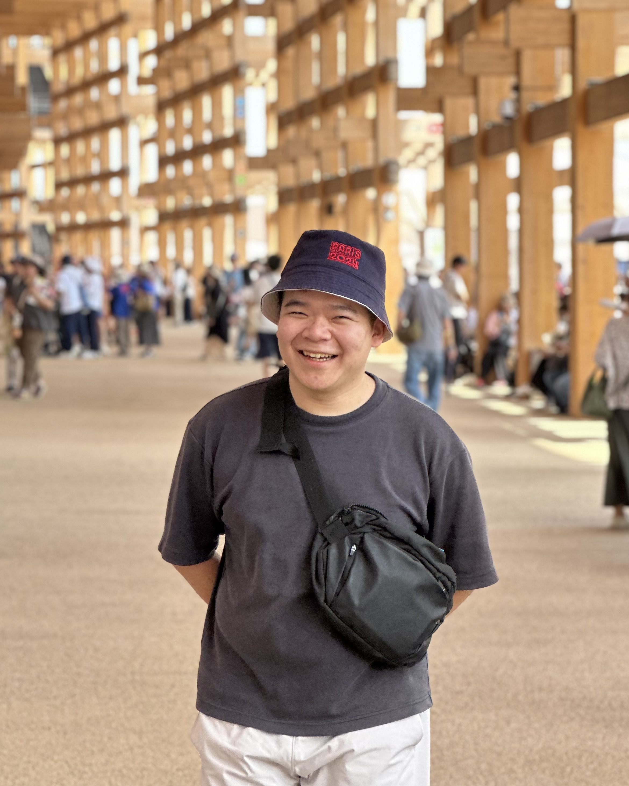
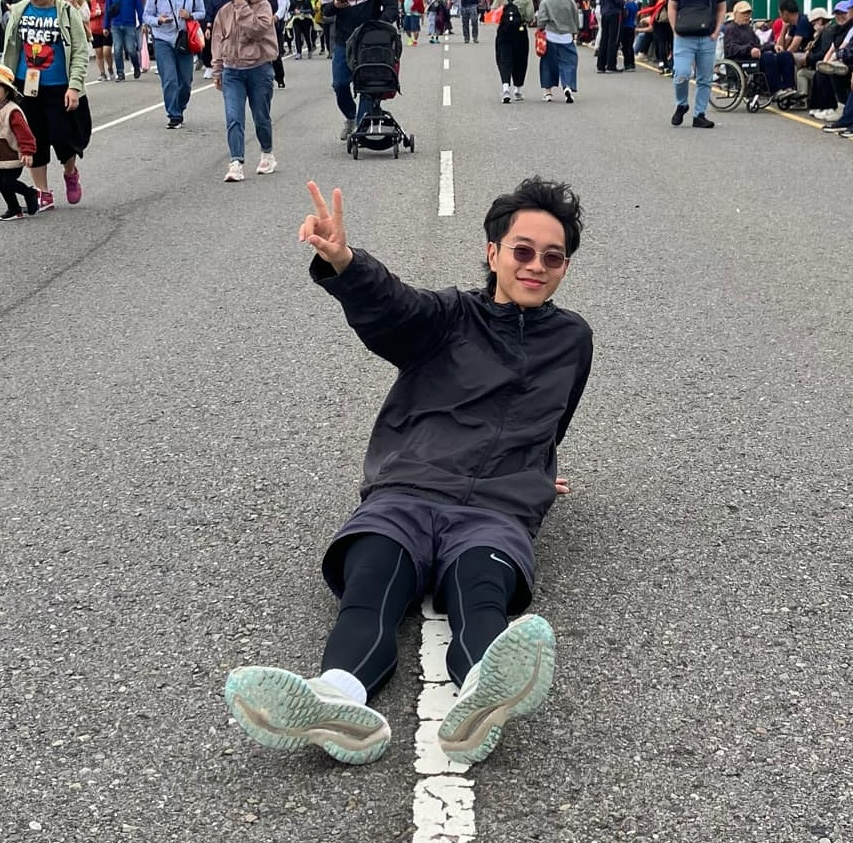
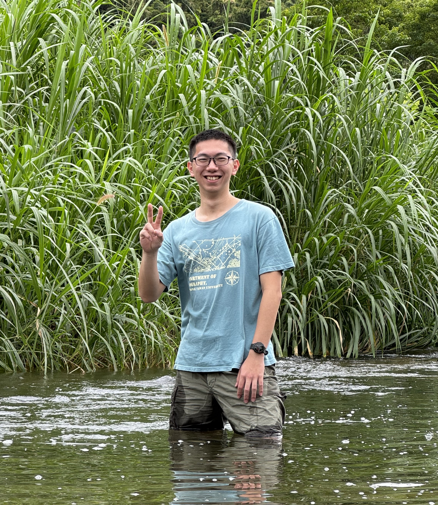
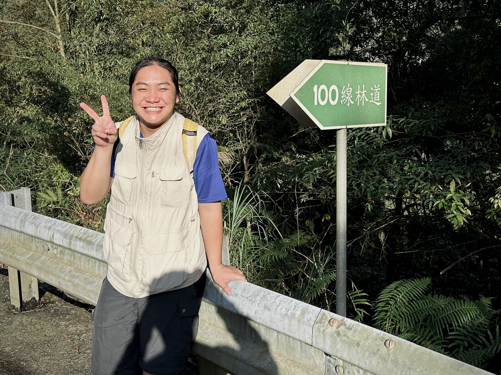

永續地水系統研究室
Sustainable Land-Water Systems Lab
By Prof. Wei Weng
Department of Geography, National Taiwan Unversity
Current Members
Shao-Fang Li (Shawn)
Master Student
Ping Fu
Research Assistant
- On Data Uncertainty of Continental Moisture Tracking
- Wild fire impact on public health in legal Amazonia region

Chen-Wei Ho (Herman)
Research Assistant
- Feeding Growing Cities: Tracing Causal Relationship between Urbanization and Protein Supply. Analyzed nutrition transitions across 149 countries (1991–2021), linking socio-economic development to food security. Identified misalignment patterns and highlighted how structural contexts shape nutrition disparities.

Zi-Feng Chen
Bachelor Student
- If the Century Drought Strikes Again: Assessing Economic Losses, Water Resource Resilience, and Policy Adaptation in Taiwan under Prolonged Drought (114-2813-C-002-203-H)
- Heat mortality and urban infrastructure

Hao-Ren Shiau (Austin)
Bachelor Student

Yi-An Chen (Timothy)
Bachelor Student
- Wildfire Impacts on Public Health in Brazil

Yu-Hsiang Chang
Research Assistant
- Investigating climate impacts of afforestation on albedo effect in Mongolia
Kai-Yuan Cheng (Carrie)
Bachelor Student
- Climate change economics
Alumni
Leandro Eugênio de Souza
Alumni
- Climate Change Adaptation in Amazonian Tribes
Phoenix Wu
Alumni
- Minimum Mortality Temperature in European Cities
Sabrina Liu
Alumni
- TBD